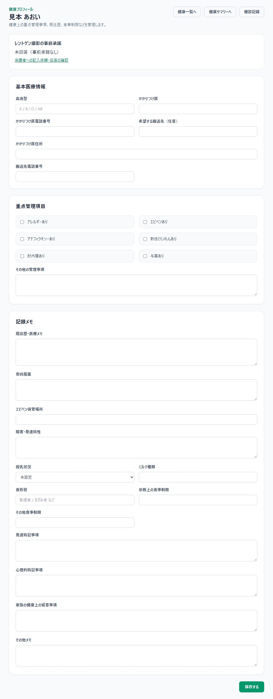
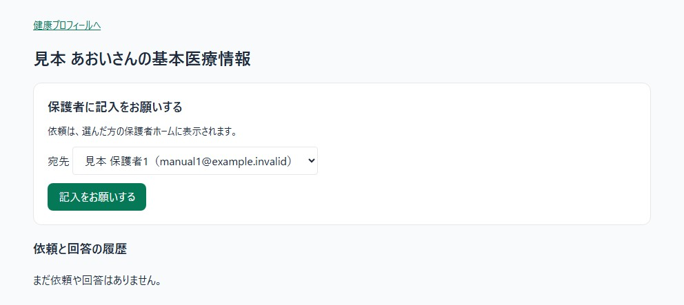
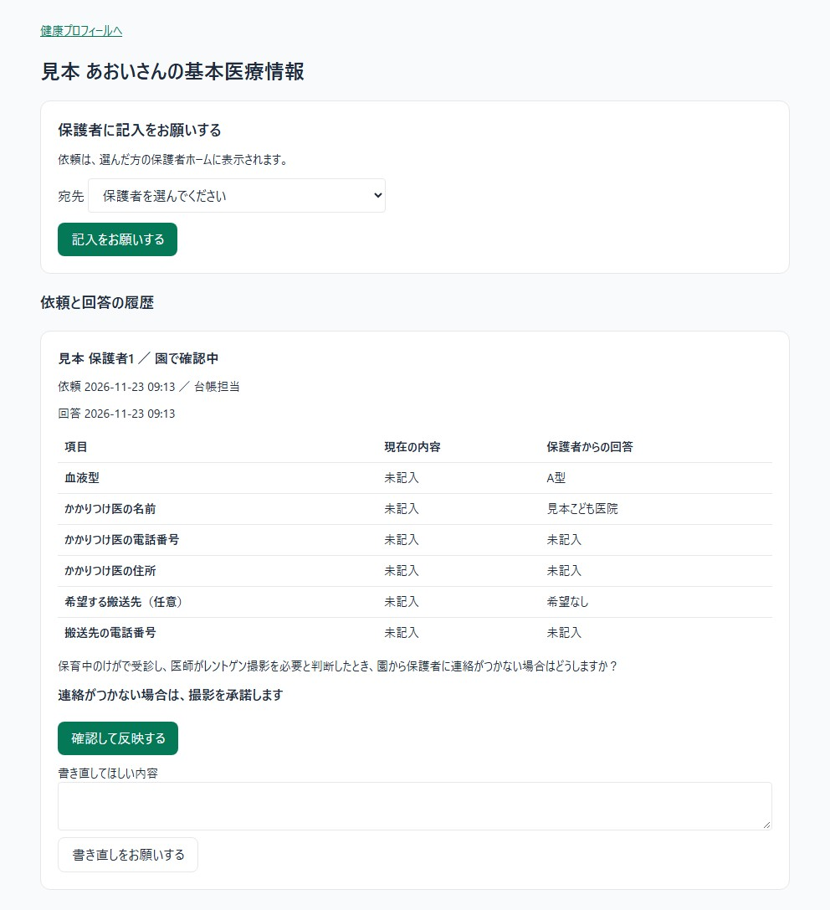
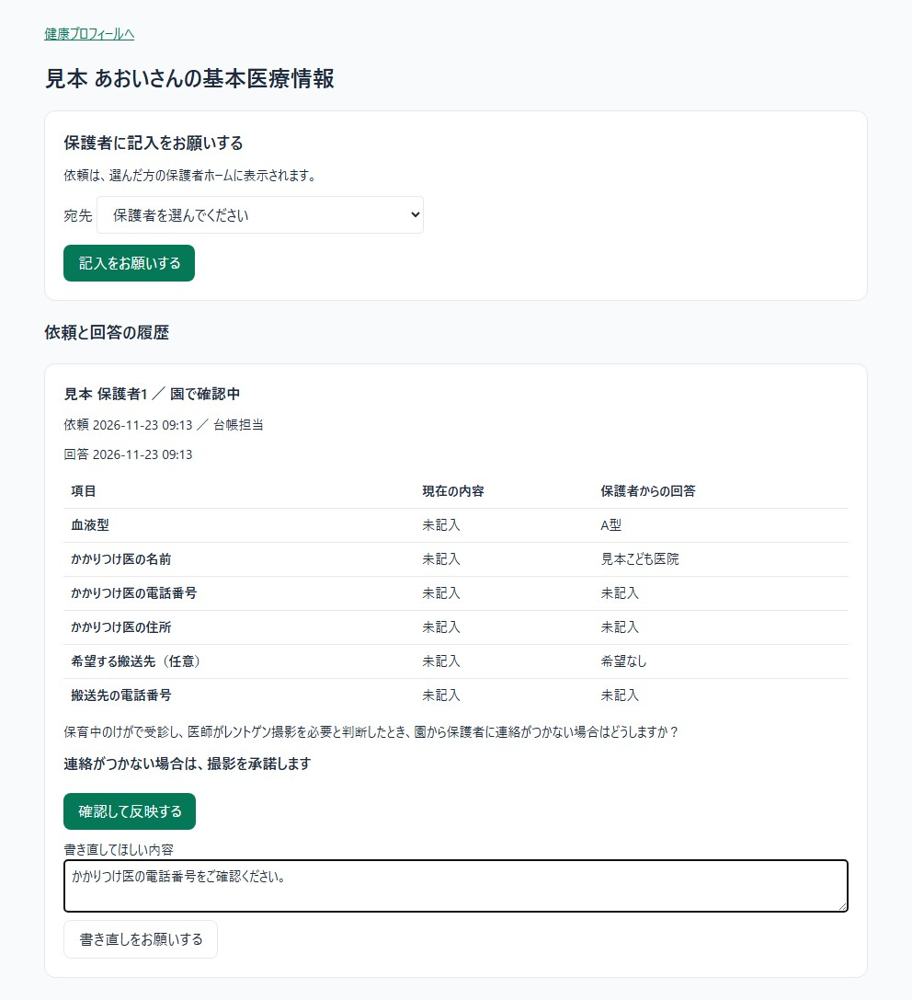
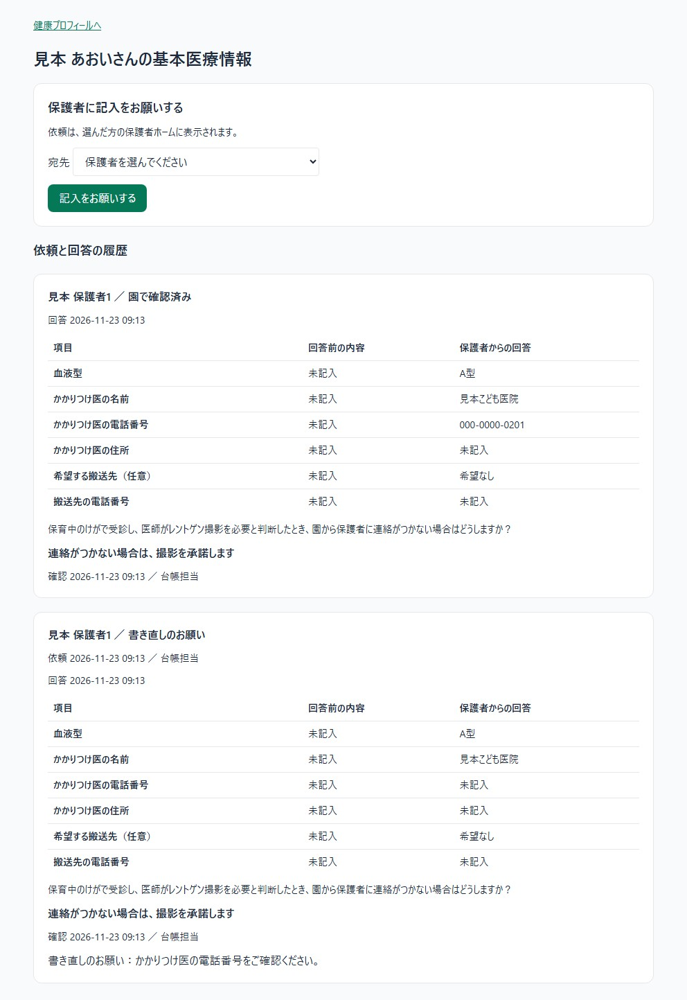
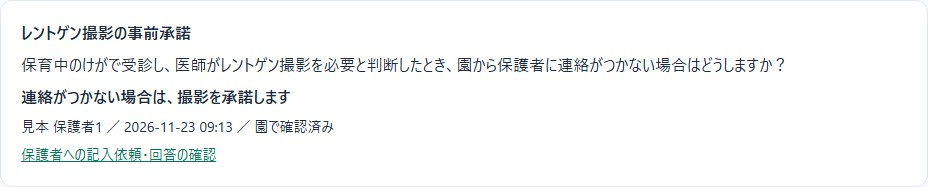

基本医療情報を保護者に依頼し、回答を確認する
健康プロフィールから、対象の保護者に記入を依頼できます。依頼は編集できる職員、回答の反映と書き直し依頼は園児台帳の管理権限を持つ職員が行います。
2026年11月23日更新。画面の人物・記録はすべて架空です。画像を押すと拡大できます。
1健康プロフィールから回答の画面へ進む
健康管理で園児を選び、健康サマリーから「健康プロフィール」を開きます。「保護者への記入依頼・回答の確認」を押してください。

2宛先を選んで記入をお願いする
園児名を確かめ、紐付いている保護者を「宛先」で選び、「記入をお願いする」を押します。依頼は選んだ保護者のホームに表示されます。
有効な保護者アカウントがない場合はその旨が表示されます。園児と保護者の登録を確認してください。別の園児の保護者を宛先にすることはできません。

3現在の内容と回答を見比べる
回答が届いたら、同じ画面の「依頼と回答の履歴」を開きます。「園で確認中」の回答について、「現在の内容」と「保護者からの回答」を比較します。
血液型、かかりつけ医の名前・電話・住所、希望する搬送先と電話番号を確認します。レントゲン撮影の回答は、画面に表示される質問の条件と回答を一緒に読みます。未回答は事前承諾として扱いません。
保護者が送信しただけでは健康プロフィールに反映されません。兄弟姉妹にも自動で転記されません。

4聞き直すときは理由を書いて返す
「書き直してほしい内容」に確認したい点を書き、「書き直しをお願いする」を押します。理由は必須です。保護者は画面に出るお願いを読み、書き直して回答できます。
この操作では台帳を更新しません。再回答が届いたら、もう一度内容を比較してください。

5確認した回答を反映する
内容を確認できたら「確認して反映する」を押します。履歴の確認者・日時を確かめ、健康プロフィールを開いて反映された値を確認します。
ほかの職員などが先に台帳を変更した場合は、そのまま上書きせず画面を開き直して比較します。反映や書き直しのボタンが出ない場合は、園児台帳を管理できる職員へ依頼してください。

